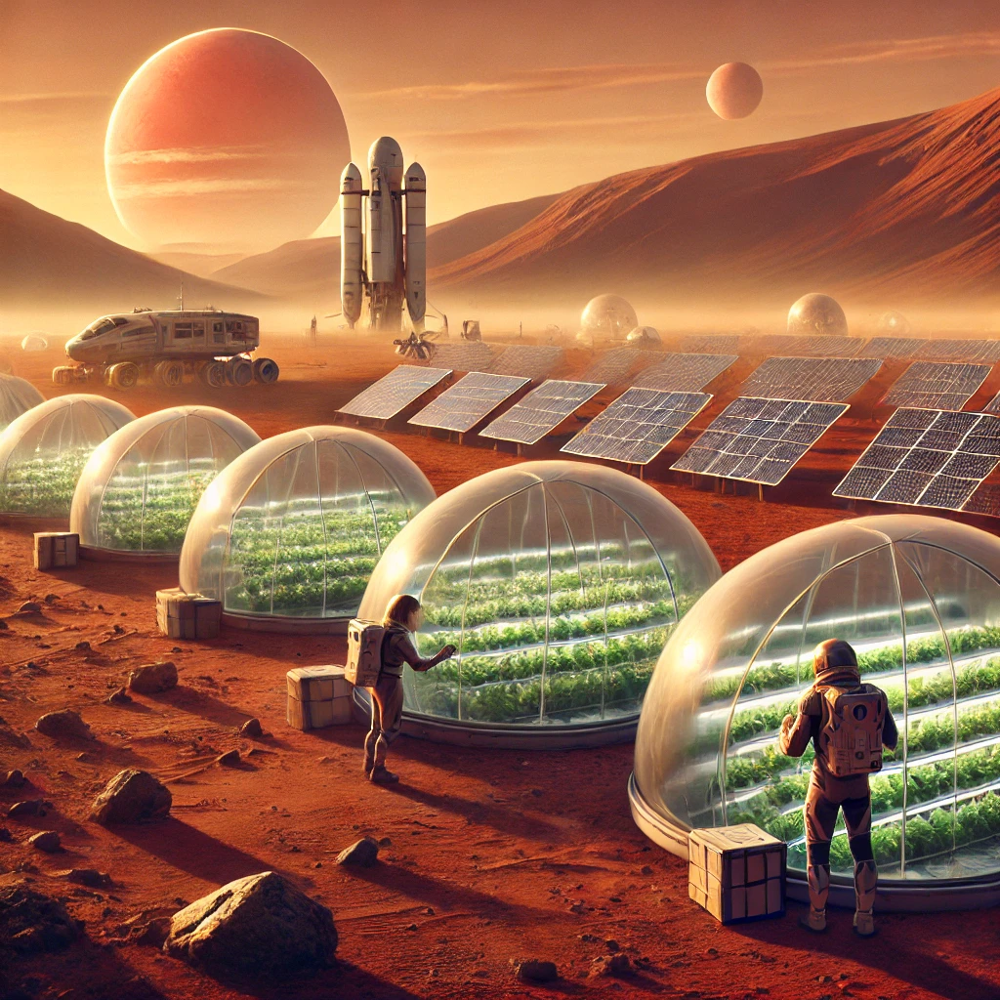
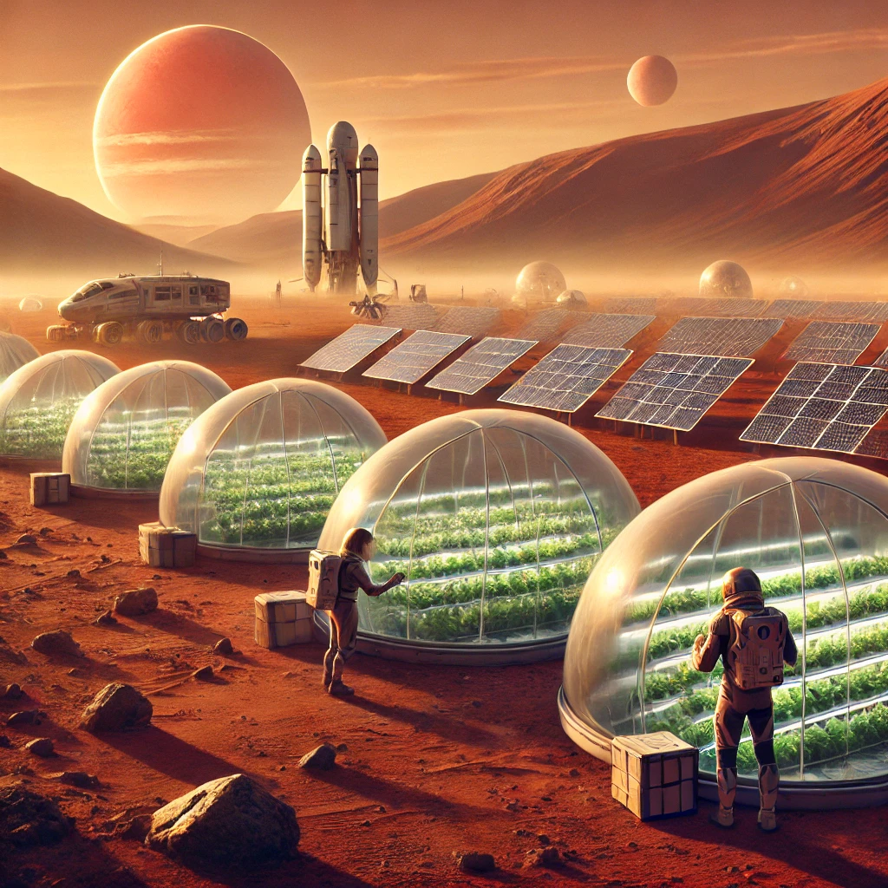

A Nova Fronteira: A Conquista do Espaço Profundo
A humanidade sempre foi movida pelo desejo de explorar o desconhecido, e agora, diante de uma nova era, a fronteira final está se abrindo de forma grandiosa. A exploração espacial, antes limitada à órbita da Terra e a visitas breves à Lua, está se expandindo para o espaço profundo, onde novos desafios e oportunidades aguardam. A "Nova Fronteira" não é apenas um conceito geográfico, mas um marco na evolução tecnológica e na adaptação humana aos rigores do universo.
Colonização de Novos Mundos
Com a recente inauguração de colônias permanentes em Marte e luas de Júpiter como Europa, estamos começando a transformar esses mundos inóspitos em novos lares. Através de inovações como terraformação controlada e domos autossustentáveis, os primeiros passos foram dados para tornar ambientes hostis habitáveis. O processo de criar atmosferas respiráveis e cultivar alimentos fora da Terra está avançando rapidamente, mostrando que a colonização interestelar é mais do que um sonho.
No entanto, a colonização não se limita a apenas "habitar" novos planetas. Estamos repensando a forma como vivemos e interagimos com esses ecossistemas alienígenas. O equilíbrio entre a exploração e a preservação será crucial à medida que a humanidade expande sua presença no cosmos, e já surgem debates éticos sobre como deveríamos abordar esses mundos, especialmente aqueles que podem abrigar formas de vida desconhecidas.
Viagens Interestelares: O Próximo Salto
nquanto as viagens dentro do Sistema Solar já se tornaram uma realidade, o próximo grande desafio será romper as fronteiras para além de nossa vizinhança cósmica. Propulsores de fusão nuclear, naves com motores de antimatéria e até experimentos com buracos de minhoca estão na linha de frente das pesquisas para permitir viagens interestelares em tempos viáveis. O sonho de alcançar sistemas estelares vizinhos como Alfa Centauri está cada vez mais próximo de ser realizado.
Missões exploratórias robóticas já estão sendo enviadas para sistemas distantes, buscando planetas habitáveis e analisando a composição de exoplanetas. Mas, para enviar humanos, será necessário superar desafios inimagináveis, como a radiação cósmica, longos períodos em ambientes fechados e a saúde física e mental durante viagens de décadas ou séculos.
A Evolução da Civilização Humana
Ao nos aventurarmos além dos limites da Terra, a própria definição do que significa ser humano começa a mudar. Tecnologias avançadas de bioengenharia e integração homem-máquina estão sendo desenvolvidas para permitir que as futuras gerações sobrevivam às duras condições do espaço. Isso levanta uma pergunta fundamental: estaremos nos adaptando ao cosmos, ou nos transformando em algo inteiramente novo?
A presença humana no espaço não é apenas uma questão de sobrevivência, mas de expansão da nossa civilização. Com a criação de colônias e estações espaciais autossustentáveis, a humanidade poderá criar sociedades inteiramente novas, desvinculadas dos paradigmas da Terra. Novas formas de governo, economia e cultura poderão surgir à medida que pequenos grupos de humanos se espalham por planetas e luas distantes, potencialmente tornando-se independentes da Terra.
Os Desafios da Nova Era
Apesar do otimismo, os desafios são monumentais. Desde a logística do transporte interestelar até a criação de colônias autossuficientes, há muitas barreiras a serem superadas. O desenvolvimento de tecnologias seguras e viáveis para esses empreendimentos é crucial, assim como a cooperação internacional. Além disso, a exploração espacial não está imune a questões geopolíticas. Disputas sobre a exploração de recursos em asteroides ou exoplanetas podem desencadear tensões globais e até conflitos no espaço.
Outro aspecto importante será a manutenção da saúde mental e emocional dos colonos. Viver em ambientes isolados, sem o céu azul da Terra ou a proximidade de entes queridos, pode exigir um nível de resiliência psicológica sem precedentes.
Um Novo Começo
Ao adentrarmos essa nova fronteira, a humanidade não está apenas explorando novos mundos – está redesenhando o seu próprio destino. A expansão para o espaço profundo oferece a promessa de uma segunda chance, de corrigir os erros do passado, como a degradação ambiental e os conflitos globais, enquanto começamos uma nova era de descobertas e possibilidades.
Seja colonizando Marte, explorando os oceanos congelados de Europa ou enviando sondas para os confins da galáxia, a humanidade está se preparando para o que pode ser a maior aventura da história. Essa jornada ao desconhecido não será apenas uma questão de sobrevivência, mas de redefinição de quem somos e do que somos capazes de alcançar.
A fronteira final está à nossa frente – e com ela, um novo começo para a civilização humana.
 
